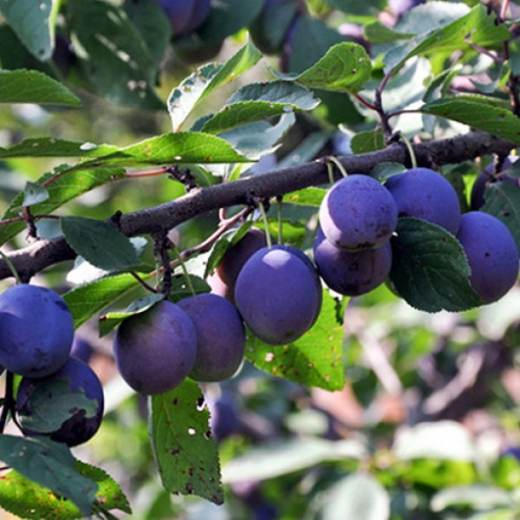
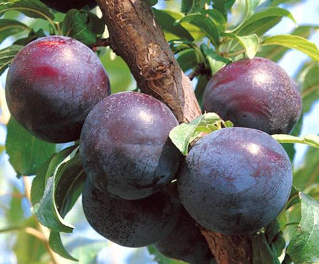
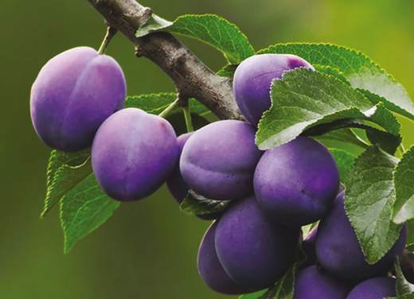
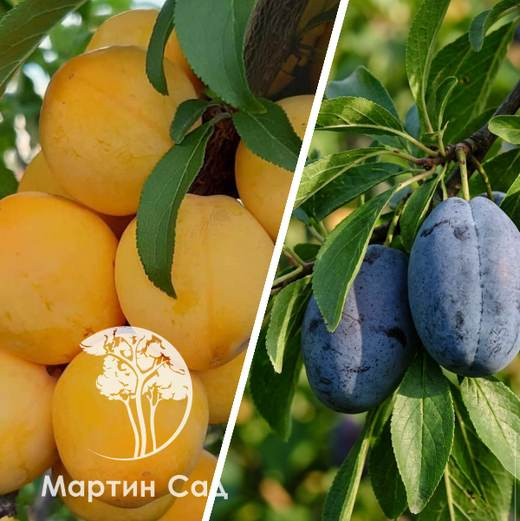

Шесть слив: пять в первой линии и одна в глубине сада. Сливы средней полосы разнообразны — от Венгерки до Яхонтовой; шесть деревьев почти наверняка разных сортов, и это хорошо для опыления.




Клик по фото — полный размер. Фотографии иллюстрируют сорт/вид; собраны из открытых источников (питомники, сортовые каталоги, Википедия).
Слива домашняя — культура щедрой руки: при хорошем опылении и уходе взрослое дерево даёт 20–50 кг плодов. Популярные сорта средней полосы: Венгерка московская, Смолинка, Яхонтовая, Утро, Ренклод колхозный, Евразия 21, Заречная ранняя, Этюд, Память Тимирязева.
Определить свои сорта проще всего по сроку созревания и плодам: венгерки — тёмно-синие удлинённые с плотной мякотью (идут в чернослив), ренклоды — округлые жёлто-зелёные сладкие, яичные сливы — крупные красные/жёлтые. Запишите, какая из шести слив цветёт и созревает раньше других, — это ключ к их именам.
| Посадка | весна или осень (в средней полосе весна надёжнее) |
| Место | солнце, защита от северного ветра, без низин |
| Расстояние | 3–4 м |
| Посадочная яма | 60–70 см глубиной |
| Кислотность | pH 6,5–7,5 — известкование обязательно на кислых |
| Урожай | 20–50 кг со взрослого дерева |
Советы собраны из отзывов садоводов на форумах и из практики питомников; цитаты приведены по источникам ниже.